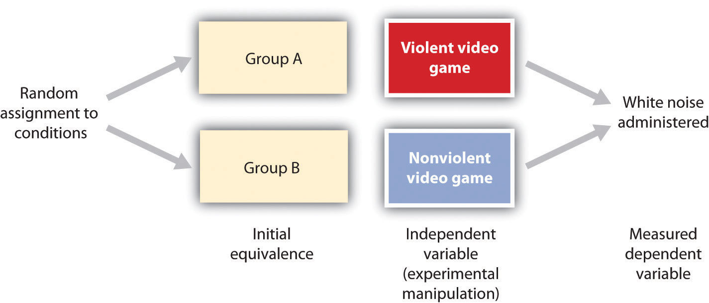
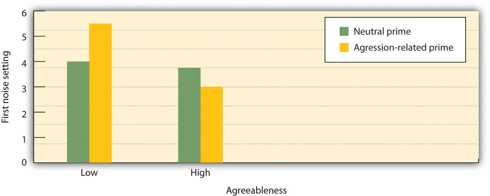

Social psychologists are not the only people interested in understanding and predicting social behavior or the only people who study it. Social behavior is also considered by religious leaders, philosophers, politicians, novelists, and others, and it is a common topic on TV shows. But the social psychological approach to understanding social behavior goes beyond the mere observation of human actions. Social psychologists believe that a true understanding of the causes of social behavior can only be obtained through a systematic scientific approach, and that is why they conduct scientific research. Social psychologists believe that the study of social behavior should be empiricalBased on the collection and systematic analysis of observable data.—that is, based on the collection and systematic analysis of observable data.
Because social psychology concerns the relationships among people, and because we can frequently find answers to questions about human behavior by using our own common sense or intuition, many people think that it is not necessary to study it empirically (Lilienfeld, 2011).Lilienfeld, S. O. (2011, June 13). Public skepticism of psychology: Why many people perceive the study of human behavior as unscientific. American Psychologist. doi: 10.1037/a0023963 But although we do learn about people by observing others and therefore social psychology is in fact partly common sense, social psychology is not entirely common sense.
In case you are not convinced about this, perhaps you would be willing to test whether or not social psychology is just common sense by taking a short true-or-false quiz. If so, please have a look at Table 1.1 "Is Social Psychology Just Common Sense?" and respond with either “True” or “False.” Based on your past observations of people’s behavior, along with your own common sense, you will likely have answers to each of the questions on the quiz. But how sure are you? Would you be willing to bet that all, or even most, of your answers have been shown to be correct by scientific research? Would you be willing to accept your score on this quiz for your final grade in this class? If you are like most of the students in my classes, you will get at least some of these answers wrong. (To see the answers and a brief description of the scientific research supporting each of these topics, please go to the Chapter Summary at the end of this chapter.)
Table 1.1 Is Social Psychology Just Common Sense?
| Answer each of the following questions, using your own initution, as either true or false. |
|---|
| Opposites attract. |
| An athlete who wins the bronze medal (third place) in an event is happier about his or her performance than the athlete who wins the silver medal (second place). |
| Having good friends you can count on can keep you from catching colds. |
| Subliminal advertising (i.e., persuasive messages that are displayed out of our awareness on TV or movie screens) is very effective in getting us to buy products. |
| The greater the reward promised for an activity, the more one will come to enjoy engaging in that activity. |
| Physically attractive people are seen as less intelligent than less attractive people. |
| Punching a pillow or screaming out loud is a good way to reduce frustration and aggressive tendencies. |
| People pull harder in a tug-of-war when they’re pulling alone than when pulling in a group. |
One of the reasons we might think that social psychology is common sense is that once we learn about the outcome of a given event (e.g., when we read about the results of a research project), we frequently believe that we would have been able to predict the outcome ahead of time. For instance, if half of a class of students is told that research concerning attraction between people has demonstrated that “opposites attract,” and if the other half is told that research has demonstrated that “birds of a feather flock together,” most of the students in both groups will report believing that the outcome is true and that they would have predicted the outcome before they had heard about it. Of course, both of these contradictory outcomes cannot be true. The problem is that just reading a description of research findings leads us to think of the many cases that we know that support the findings and thus makes them seem believable. The tendency to think that we could have predicted something that we probably would not have been able to predict is called the hindsight biasThe tendency to think that we could have predicted something that we probably would not have been able to predict..
Our common sense also leads us to believe that we know why we engage in the behaviors that we engage in, when in fact we may not. Social psychologist Daniel Wegner and his colleagues have conducted a variety of studies showing that we do not always understand the causes of our own actions. When we think about a behavior before we engage in it, we believe that the thinking guided our behavior, even when it did not (Morewedge, Gray, & Wegner, 2010).Morewedge, C. K., Gray, K., & Wegner, D. M. (2010). Perish the forethought: Premeditation engenders misperceptions of personal control. In R. R. Hassin, K. N. Ochsner, & Y. Trope (Eds.), Self-control in society, mind, and brain (pp. 260–278). New York, NY: Oxford University Press. People also report that they contribute more to solving a problem when they are led to believe that they have been working harder on it, even though the effort did not increase their contribution to the outcome (Preston & Wegner, 2007).Preston, J., & Wegner, D. M. (2007). The eureka error: Inadvertent plagiarism by misattributions of effort. Journal of Personality and Social Psychology, 92(4), 575–584. These findings, and many others like them, demonstrate that our beliefs about the causes of social events, and even of our own actions, do not always match the true causes of those events.
Social psychologists conduct research because it often uncovers results that could not have been predicted ahead of time. Putting our hunches to the test exposes our ideas to scrutiny. The scientific approach brings a lot of surprises, but it also helps us test our explanations about behavior in a rigorous manner. It is important for you to understand the research methods used in psychology so that you can evaluate the validity of the research that you read about here, in other courses, and in your everyday life.
Social psychologists publish their research in scientific journals, and your instructor may require you to read some of these research articles. The most important social psychology journals are listed in Table 1.2 "Social Psychology Journals". If you are asked to do a literature search on research in social psychology, you should look for articles from these journals.
Table 1.2 Social Psychology Journals
| Journal of Personality and Social Psychology |
| Journal of Experimental Social Psychology |
| Personality and Social Psychology Bulletin |
| Social Psychology and Personality Science |
| Social Cognition |
| European Journal of Social Psychology |
| Social Psychology Quarterly |
| Basic and Applied Social Psychology |
| Journal of Applied Social Psychology |
| Note. The research articles in these journals are likely to be available in your college library. A fuller list can be found here: http://www.socialpsychology.org/journals.htm#social |
|---|
We’ll discuss the empirical approach and review the findings of many research projects throughout this book, but for now let’s take a look at the basics of how scientists use research to draw overall conclusions about social behavior. Keep in mind as you read this book, however, that although social psychologists are pretty good at understanding the causes of behavior, our predictions are a long way from perfect. We are not able to control the minds or the behaviors of others or to predict exactly what they will do in any given situation. Human behavior is complicated because people are complicated and because the social situations that they find themselves in every day are also complex. It is this complexity—at least for me—that makes studying people so interesting and fun.
One important aspect of using an empirical approach to understand social behavior is that the concepts of interest must be measured (Figure 1.4 "The Operational Definition"). If we are interested in learning how much Sarah likes Robert, then we need to have a measure of her liking for him. But how, exactly, should we measure the broad idea of “liking”? In scientific terms, the characteristics that we are trying to measure are known as conceptual variablesA description of the characteristics that social psychologists try to measure., and the particular method that we use to measure a variable of interest is called an operational definitionThe method that social psychologists use to measure a conceptual variable..
For anything that we might wish to measure, there are many different operational definitions, and which one we use depends on the goal of the research and the type of situation we are studying. To better understand this, let’s look at an example of how we might operationally define “Sarah likes Robert.”
Figure 1.4 The Operational Definition

An idea or conceptual variable (such as “how much Sarah likes Robert”) is turned into a measure through an operational definition.
One approach to measurement involves directly asking people about their perceptions using self-report measures. Self-report measuresA measure in which individuals are asked to respond to questions posed by an interviewer or on a questionnaire. are measures in which individuals are asked to respond to questions posed by an interviewer or on a questionnaire. Generally, because any one question might be misunderstood or answered incorrectly, in order to provide a better measure, more than one question is asked and the responses to the questions are averaged together. For example, an operational definition of Sarah’s liking for Robert might involve asking her to complete the following measure:
I enjoy being around Robert.
Strongly disagree 1 2 3 4 5 6 Strongly agree
I get along well with Robert.
Strongly disagree 1 2 3 4 5 6 Strongly agree
I like Robert.
Strongly disagree 1 2 3 4 5 6 Strongly agree
The operational definition would be the average of her responses across the three questions. Because each question assesses the attitude differently, and yet each question should nevertheless measure Sarah’s attitude toward Robert in some way, the average of the three questions will generally be a better measure than would any one question on its own.
Although it is easy to ask many questions on self-report measures, these measures have a potential disadvantage. As we have seen, people’s insights into their own opinions and their own behaviors may not be perfect, and they might also not want to tell the truth—perhaps Sarah really likes Robert, but she is unwilling or unable to tell us so. Therefore, an alternative to self-report that can sometimes provide a more valid measure is to measure behavior itself. Behavioral measuresA measure designed to directly measure an individual’s actions. are measures designed to directly assess what people do. Instead of asking Sara how much she likes Robert, we might instead measure her liking by assessing how much time she spends with Robert or by coding how much she smiles at him when she talks to him. Some examples of behavioral measures that have been used in social psychological research are shown in Table 1.3 "Examples of Operational Definitions of Conceptual Variables That Have Been Used in Social Psychological Research".
Table 1.3 Examples of Operational Definitions of Conceptual Variables That Have Been Used in Social Psychological Research
| Conceptual variable | Operational definitions |
|---|---|
| Aggression | • Number of presses of a button that administers shock to another student |
| • Number of seconds taken to honk the horn at the car ahead after a stoplight turns green | |
| Interpersonal attraction | • Number of times that a person looks at another person |
| • Number of millimeters of pupil dilation when one person looks at another | |
| Altruism | • Number of pieces of paper a person helps another pick up |
| • Number of hours of volunteering per week that a person engages in | |
| Group decision-making skills | • Number of groups able to correctly solve a group performance task |
| • Number of seconds in which a group correctly solves a problem | |
| Prejudice | • Number of negative words used in a creative story about another person |
| • Number of inches that a person places their chair away from another person |
Still another approach to measuring our thoughts and feelings is to measure brain activity, and recent advances in brain science have created a wide variety of new techniques for doing so. One approach, known as electroencephalography (EEG)A technique that records the electrical activity produced by the brain’s neurons through the use of electrodes that are placed around the research participant’s head., is a technique that records the electrical activity produced by the brain’s neurons through the use of electrodes that are placed around the research participant’s head. An electroencephalogram (EEG) can show if a person is asleep, awake, or anesthetized because the brain wave patterns are known to differ during each state. An EEG can also track the waves that are produced when a person is reading, writing, and speaking with others. A particular advantage of the technique is that the participant can move around while the recordings are being taken, which is useful when measuring brain activity in children who often have difficulty keeping still. Furthermore, by following electrical impulses across the surface of the brain, researchers can observe changes over very fast time periods.
This child is wearing an EEG cap.
Although EEGs can provide information about the general patterns of electrical activity within the brain, and although they allow the researcher to see these changes quickly as they occur in real time, the electrodes must be placed on the surface of the skull, and each electrode measures brain waves from large areas of the brain. As a result, EEGs do not provide a very clear picture of the structure of the brain.
But techniques exist to provide more specific brain images. Functional magnetic resonance imaging (fMRI)A neuroimaging technique that uses a magnetic field to create images of brain structure and function. is a neuroimaging technique that uses a magnetic field to create images of brain structure and function. In research studies that use the fMRI, the research participant lies on a bed within a large cylindrical structure containing a very strong magnet. Nerve cells in the brain that are active use more oxygen, and the need for oxygen increases blood flow to the area. The fMRI detects the amount of blood flow in each brain region and thus is an indicator of which parts of the brain are active.
Very clear and detailed pictures of brain structures (see Figure 1.5 "Functional Magnetic Resonance Imaging (fMRI)") can be produced via fMRI. Often, the images take the form of cross-sectional “slices” that are obtained as the magnetic field is passed across the brain. The images of these slices are taken repeatedly and are superimposed on images of the brain structure itself to show how activity changes in different brain structures over time. Normally, the research participant is asked to engage in tasks while in the scanner, for instance, to make judgments about pictures of people, to solve problems, or to make decisions about appropriate behaviors. The fMRI images show which parts of the brain are associated with which types of tasks. Another advantage of the fMRI is that is it noninvasive. The research participant simply enters the machine and the scans begin.
Figure 1.5 Functional Magnetic Resonance Imaging (fMRI)
The fMRI creates images of brain structure and activity. In this image, the red and yellow areas represent increased blood flow and thus increased activity.
Source: [citation redacted per publisher request] (left). Image on the right from http://en.wikipedia.org/wiki/File:Varian4T.jpg (right).
Although the scanners themselves are expensive, the advantages of fMRIs are substantial, and scanners are now available in many university and hospital settings. The fMRI is now the most commonly used method of learning about brain structure, and it has been employed by social psychologists to study social cognition, attitudes, morality, emotions, responses to being rejected by others, and racial prejudice, to name just a few topics (Eisenberger, Lieberman, & Williams, 2003; Greene, Sommerville, Nystrom, Darley, & Cohen, 2001; Lieberman, Hariri, Jarcho, Eisenberger, & Bookheimer, 2005; Ochsner, Bunge, Gross, & Gabrieli, 2002; Richeson et al., 2003).Eisenberger, N. I., Lieberman, M. D., & Williams, K. D. (2003). Does rejection hurt? An fMRI study of social exclusion. Science, 302(5643), 290–292; Greene, J. D., Sommerville, R. B., Nystrom, L. E., Darley, J. M., & Cohen, J. D. (2001). An fMRI investigation of emotional engagement in moral judgment. Science, 293(5537), 2105–2108; Lieberman, M. D., Hariri, A., Jarcho, J. M., Eisenberger, N. I., & Bookheimer, S. Y. (2005). An fMRI investigation of race-related amygdala activity in African-American and Caucasian-American individuals. Nature Neuroscience, 8(6), 720–722; Ochsner, K. N., Bunge, S. A., Gross, J. J., & Gabrieli, J. D. E. (2002). Rethinking feelings: An fMRI study of the cognitive regulation of emotion. Journal of Cognitive Neuroscience, 14(8), 1215–1229; Richeson, J. A., Baird, A. A., Gordon, H. L., Heatherton, T. F., Wyland, C. L., Trawalter, S., Richeson, J. A., Baird, A. A., Gordon, H. L., Heatherton, T. F., Wyland, C. L., Trawalter, S., et al.#8230;Shelton, J. N. (2003). An fMRI investigation of the impact of interracial contact on executive function. Nature Neuroscience, 6(12), 1323–1328.
Once we have decided how to measure our variables, we can begin the process of research itself. As you can see in Table 1.4 "Three Major Research Designs Used by Social Psychologists", there are three major approaches to conducting research that are used by social psychologists—the observational approach, the correlational approach, and the experimental approach. Each approach has some advantages and disadvantages.
Table 1.4 Three Major Research Designs Used by Social Psychologists
| Research Design | Goal | Advantages | Disadvantages |
|---|---|---|---|
| Observational | To create a snapshot of the current state of affairs | Provides a relatively complete picture of what is occurring at a given time. Allows the development of questions for further study. | Does not assess relationships between variables. |
| Correlational | To assess the relationships between two or more variables | Allows the testing of expected relationships between variables and the making of predictions. Can assess these relationships in everyday life events. | Cannot be used to draw inferences about the causal relationships between the variables. |
| Experimental | To assess the causal impact of one or more experimental manipulations on a dependent variable | Allows the drawing of conclusions about the causal relationships among variables. | Cannot experimentally manipulate many important variables. May be expensive and take much time to conduct. |
The most basic research design, observational researchResearch that involves making observations of behavior and recording those observations in an objective manner., is research that involves making observations of behavior and recording those observations in an objective manner. Although it is possible in some cases to use observational data to draw conclusions about the relationships between variables (e.g., by comparing the behaviors of older versus younger children on a playground), in many cases the observational approach is used only to get a picture of what is happening to a given set of people at a given time and how they are responding to the social situation. In these cases, the observational approach involves creating a type of “snapshot” of the current state of affairs.
One advantage of observational research is that in many cases it is the only possible approach to collecting data about the topic of interest. A researcher who is interested in studying the impact of a hurricane on the residents of New Orleans, the reactions of New Yorkers to a terrorist attack, or the activities of the members of a religious cult cannot create such situations in a laboratory but must be ready to make observations in a systematic way when such events occur on their own. Thus observational research allows the study of unique situations that could not be created by the researcher. Another advantage of observational research is that the people whose behavior is being measured are doing the things they do every day, and in some cases they may not even know that their behavior is being recorded.
One early observational study that made an important contribution to understanding human behavior was reported in a book by Leon Festinger and his colleagues (Festinger, Riecken, & Schachter, 1956).Festinger, L., Riecken, H. W., & Schachter, S. (1956). When prophecy fails: A social and psychological study of a modern group that predicted the destruction of the world. Minneapolis, MN: University of Minnesota Press. The book, called When Prophecy Fails, reported an observational study of the members of a “doomsday” cult. The cult members believed that they had received information, supposedly sent through “automatic writing” from a planet called “Clarion,” that the world was going to end. More specifically, the group members were convinced that the earth would be destroyed, as the result of a gigantic flood, sometime before dawn on December 21, 1954.
When Festinger learned about the cult, he thought that it would be an interesting way to study how individuals in groups communicate with each other to reinforce their extreme beliefs. He and his colleagues observed the members of the cult over a period of several months, beginning in July of the year in which the flood was expected. The researchers collected a variety of behavioral and self-report measures by observing the cult, recording the conversations among the group members, and conducting detailed interviews with them. Festinger and his colleagues also recorded the reactions of the cult members, beginning on December 21, when the world did not end as they had predicted. This observational research provided a wealth of information about the indoctrination patterns of cult members and their reactions to disconfirmed predictions. This research also helped Festinger develop his important theory of cognitive dissonance.
Despite their advantages, observational research designs also have some limitations. Most important, because the data that are collected in observational studies are only a description of the events that are occurring, they do not tell us anything about the relationship between different variables. However, it is exactly this question that correlational research and experimental research are designed to answer.
Because social psychologists are generally interested in looking at relationships among variables, they begin by stating their predictions in the form of a precise statement known as a research hypothesis. A research hypothesisA specific and falsifiable prediction regarding the relationship between two or more variables. is a statement about the relationship between the variables of interest and about the specific direction of that relationship. For instance, the research hypothesis “People who are more similar to each other will be more attracted to each other” predicts that there is a relationship between a variable called similarity and another variable called attraction. In the research hypothesis “The attitudes of cult members become more extreme when their beliefs are challenged,” the variables that are expected to be related are extremity of beliefs and the degree to which the cults’ beliefs are challenged.
Because the research hypothesis states both that there is a relationship between the variables and the direction of that relationship, it is said to be falsifiableWhen the outcome of the research can demonstrate empirically either that there is support for the hypothesis (i.e., the relationship between the variables was correctly specified) or that there is actually no relationship between the variables or that the actual relationship is not in the direction that was predicted.. Being falsifiable means that the outcome of the research can demonstrate empirically either that there is support for the hypothesis (i.e., the relationship between the variables was correctly specified) or that there is actually no relationship between the variables or that the actual relationship is not in the direction that was predicted. Thus the research hypothesis that “people will be more attracted to others who are similar to them” is falsifiable because the research could show either that there was no relationship between similarity and attraction or that people we see as similar to us are seen as less attractive than those who are dissimilar.
The goal of correlational researchResearch that involves the measurement of two or more relevant variables and an assessment of the relationship between the variables. is to search for and test hypotheses about the relationships between two or more variables. In the simplest case, the correlation is between only two variables, such as that between similarity and liking, or between gender (male versus female) and helping.
In a correlational design, the research hypothesis is that there is an association (i.e., a correlation) between the variables that are being measured. For instance, many researchers have tested the research hypothesis that a positive correlation exists between the use of violent video games and the incidence of aggressive behavior, such that people who play violent video games more frequently would also display more aggressive behavior.

A statistic known as the Pearson correlation coefficient (symbolized by the letter r) is normally used to summarize the association, or correlation, between two variables. The correlation coefficient can range from −1 (indicating a very strong negative relationship between the variables) to +1 (indicating a very strong positive relationship between the variables). Research has found that there is a positive correlation between the use of violent video games and the incidence of aggressive behavior and that the size of the correlation is about r = .30 (Bushman & Huesmann, 2010).Bushman, B. J., & Huesmann, L. R. (2010). Aggression. In S. T. Fiske, D. T. Gilbert, & G. Lindzey (Eds.), Handbook of social psychology (5th ed., Vol. 2, pp. 833–863). Hoboken, NJ: John Wiley & Sons.
One advantage of correlational research designs is that, like observational research (and in comparison with experimental research designs in which the researcher frequently creates relatively artificial situations in a laboratory setting), they are often used to study people doing the things that they do every day. And correlational research designs also have the advantage of allowing prediction. When two or more variables are correlated, we can use our knowledge of a person’s score on one of the variables to predict his or her likely score on another variable. Because high-school grade point averages are correlated with college grade point averages, if we know a person’s high-school grade point average, we can predict his or her likely college grade point average. Similarly, if we know how many violent video games a child plays, we can predict how aggressively he or she will behave. These predictions will not be perfect, but they will allow us to make a better guess than we would have been able to if we had not known the person’s score on the first variable ahead of time.
Despite their advantages, correlational designs have a very important limitation. This limitation is that they cannot be used to draw conclusions about the causal relationships among the variables that have been measured. An observed correlation between two variables does not necessarily indicate that either one of the variables caused the other. Although many studies have found a correlation between the number of violent video games that people play and the amount of aggressive behaviors they engage in, this does not mean that viewing the video games necessarily caused the aggression. Although one possibility is that playing violent games increases aggression,
another possibility is that the causal direction is exactly opposite to what has been hypothesized. Perhaps increased aggressiveness causes more interest in, and thus increased viewing of, violent games. Although this causal relationship might not seem as logical to you, there is no way to rule out the possibility of such reverse causation on the basis of the observed correlation.

Still another possible explanation for the observed correlation is that it has been produced by the presence of another variable that was not measured in the research. Common-causal variablesIn a correlational design, a variable that is not part of the research hypothesis but that causes the variables of interest to be correlated, thus producing a correlation between them. (also known as third variables) are variables that are not part of the research hypothesis but that cause both the predictor and the outcome variable and thus produce the observed correlation between them (Figure 1.6 "Correlation and Causality"). It has been observed that students who sit in the front of a large class get better grades than those who sit in the back of the class. Although this could be because sitting in the front causes the student to take better notes or to understand the material better, the relationship could also be due to a common-causal variable, such as the interest or motivation of the students to do well in the class. Because a student’s interest in the class leads him or her to both get better grades and sit nearer to the teacher, seating position and class grade are correlated, even though neither one caused the other.
Figure 1.6 Correlation and Causality

The correlation between where we sit in a large class and our grade in the class is likely caused by the influence of one or more common-causal variables.
The possibility of common-causal variables must always be taken into account when considering correlational research designs. For instance, in a study that finds a correlation between playing violent video games and aggression, it is possible that a common-causal variable is producing the relationship. Some possibilities include the family background, diet, and hormone levels of the children. Any or all of these potential common-causal variables might be creating the observed correlation between playing violent video games and aggression. Higher levels of the male sex hormone testosterone, for instance, may cause children to both watch more violent TV and behave more aggressively.
I like to think of common-causal variables in correlational research designs as “mystery” variables, since their presence and identity is usually unknown to the researcher because they have not been measured. Because it is not possible to measure every variable that could possibly cause both variables, it is always possible that there is an unknown common-causal variable. For this reason, we are left with the basic limitation of correlational research: Correlation does not imply causation.
The goal of much research in social psychology is to understand the causal relationships among variables, and for this we use experiments. Experimental research designsResearch that includes the manipulation of a given situation or experience for two or more groups of individuals who are initially created to be equivalent, followed by a measurement of the effect of that experience. are research designs that include the manipulation of a given situation or experience for two or more groups of individuals who are initially created to be equivalent, followed by a measurement of the effect of that experience.
In an experimental research design, the variables of interest are called the independent variables and the dependent variables. The independent variableIn an experiment, the variable that is manipulated by the researcher. refers to the situation that is created by the experimenter through the experimental manipulations, and the dependent variableIn an experiment, the variable that is measured after the manipulations have occurred. refers to the variable that is measured after the manipulations have occurred. In an experimental research design, the research hypothesis is that the manipulated independent variable (or variables) causes changes in the measured dependent variable (or variables). We can diagram the prediction like this, using an arrow that points in one direction to demonstrate the expected direction of causality:
viewing violence (independent variable) → aggressive behavior (dependent variable)Consider an experiment conducted by Anderson and Dill (2000),Anderson, C. A., & Dill, K. E. (2000). Video games and aggressive thoughts, feelings, and behavior in the laboratory and in life. Journal of Personality and Social Psychology, 78(4), 772–790. which was designed to directly test the hypothesis that viewing violent video games would cause increased aggressive behavior. In this research, male and female undergraduates from Iowa State University were given a chance to play either a violent video game (Wolfenstein 3D) or a nonviolent video game (Myst). During the experimental session, the participants played the video game that they had been given for 15 minutes. Then, after the play, they participated in a competitive task with another student in which they had a chance to deliver blasts of white noise through the earphones of their opponent. The operational definition of the dependent variable (aggressive behavior) was the level and duration of noise delivered to the opponent. The design and the results of the experiment are shown in Figure 1.7 "An Experimental Research Design (After Anderson & Dill, 2000)".
Figure 1.7 An Experimental Research Design (After Anderson & Dill, 2000)
Two advantages of the experimental research design are (a) an assurance that the independent variable (also known as the experimental manipulation) occurs prior to the measured dependent variable and (b) the creation of initial equivalence between the conditions of the experiment (in this case, by using random assignment to conditions).
Experimental designs have two very nice features. For one, they guarantee that the independent variable occurs prior to measuring the dependent variable. This eliminates the possibility of reverse causation. Second, the experimental manipulation allows ruling out the possibility of common-causal variables that cause both the independent variable and the dependent variable. In experimental designs, the influence of common-causal variables is controlled, and thus eliminated, by creating equivalence among the participants in each of the experimental conditions before the manipulation occurs.
The most common method of creating equivalence among the experimental conditions is through random assignment to conditionsThe most common method of creating equivalence among the experimental conditions before the experiment begins., which involves determining separately for each participant which condition he or she will experience through a random process, such as drawing numbers out of an envelope or using a website such as http://randomizer.org. Anderson and Dill first randomly assigned about 100 participants to each of their two groups. Let’s call them Group A and Group B. Because they used random assignment to conditions, they could be confident that before the experimental manipulation occurred, the students in Group A were, on average, equivalent to the students in Group B on every possible variable, including variables that are likely to be related to aggression, such as family, peers, hormone levels, and diet—and, in fact, everything else.
Then, after they had created initial equivalence, Anderson and Dill created the experimental manipulation—they had the participants in Group A play the violent video game and the participants in Group B the nonviolent video game. Then they compared the dependent variable (the white noise blasts) between the two groups and found that the students who had viewed the violent video game gave significantly longer noise blasts than did the students who had played the nonviolent game. Because they had created initial equivalence between the groups, when the researchers observed differences in the duration of white noise blasts between the two groups after the experimental manipulation, they could draw the conclusion that it was the independent variable (and not some other variable) that caused these differences. The idea is that the only thing that was different between the students in the two groups was which video game they had played.
When we create a situation in which the groups of participants are expected to be equivalent before the experiment begins, when we manipulate the independent variable before we measure the dependent variable, and when we change only the nature of independent variables between the conditions, then we can be confident that it is the independent variable that caused the differences in the dependent variable. Such experiments are said to have high internal validity, where internal validityThe extent to which changes in the dependent variable in an experiment can confidently be attributed to changes in the independent variable. refers to the confidence with which we can draw conclusions about the causal relationship between the variables.
Despite the advantage of determining causation, experimental research designs do have limitations. One is that the experiments are usually conducted in laboratory situations rather than in the everyday lives of people. Therefore, we do not know whether results that we find in a laboratory setting will necessarily hold up in everyday life. To counter this, in some cases experiments are conducted in everyday settings—for instance, in schools or other organizations. Such field experimentsExperimental research that is conducted in a natural environment, such as a school or a factory. are difficult to conduct because they require a means of creating random assignment to conditions, and this is frequently not possible in natural settings.
A second and perhaps more important limitation of experimental research designs is that some of the most interesting and important social variables cannot be experimentally manipulated. If we want to study the influence of the size of a mob on the destructiveness of its behavior, or to compare the personality characteristics of people who join suicide cults with those of people who do not join suicide cults, these relationships must be assessed using correlational designs because it is simply not possible to manipulate mob size or cult membership.
Social psychological experiments are frequently designed to simultaneously study the effects of more than one independent variable on a dependent variable. Factorial research designsAn experimental research design that uses two or more independent variables. are experimental designs that have two or more independent variables. By using a factorial design, the scientist can study the influence of each variable on the dependent variable (known as the main effects of the variables) as well as how the variables work together to influence the dependent variable (known as the interaction between the variables). Factorial designs sometimes demonstrate the person by situation interaction.
In one such study, Brian Meier and his colleagues (Meier, Robinson, & Wilkowski, 2006)Meier, B. P., Robinson, M. D., & Wilkowski, B. M. (2006). Turning the other cheek: Agreeableness and the regulation of aggression-related crimes. Psychological Science, 17(2), 136–142. tested the hypothesis that exposure to aggression-related words would increase aggressive responses toward others. Although they did not directly manipulate the social context, they used a technique common in social psychology in which they primed (i.e., activated) thoughts relating to social settings. In their research, half of their participants were randomly assigned to see words relating to aggression and the other half were assigned to view neutral words that did not relate to aggression. The participants in the study also completed a measure of individual differences in agreeableness—a personality variable that assesses the extent to which the person sees themselves as compassionate, cooperative, and high on other-concern.
Then the research participants completed a task in which they thought they were competing with another student. Participants were told that they should press the space bar on the computer as soon as they heard a tone over their headphones, and the person who pressed the button the fastest would be the winner of the trial. Before the first trial, participants set the intensity of a blast of white noise that would be delivered to the loser of the trial. The participants could choose an intensity ranging from 0 (no noise) to the most aggressive response (10, or 105 decibels). In essence, participants controlled a “weapon” that could be used to blast the opponent with aversive noise, and this setting became the dependent variable. At this point, the experiment ended.
Figure 1.8 A Person-Situation Interaction
In this experiment by Meier, Robinson, and Wilkowski (2006)Meier, B. P., Robinson, M. D., & Wilkowski, B. M. (2006). Turning the other cheek: Agreeableness and the regulation of aggression-related crimes. Psychological Science, 17(2), 136–142. the independent variables are type of priming (aggression or neutral) and participant agreeableness (high or low). The dependent variable is the white noise level selected (a measure of aggression). The participants who were low in agreeableness became significantly more aggressive after seeing aggressive words, but those high in agreeableness did not.
As you can see in Figure 1.8 "A Person-Situation Interaction", there was a person by situation interaction. Priming with aggression-related words (the situational variable) increased the noise levels selected by participants who were low on agreeableness, but priming did not increase aggression (in fact, it decreased it a bit) for students who were high on agreeableness. In this study, the social situation was important in creating aggression, but it had different effects for different people.
You may have wondered whether the participants in the video game study and that we just discussed were told about the research hypothesis ahead of time. In fact, these experiments both used a cover storyA false statement of what the research is really about.—a false statement of what the research was really about. The students in the video game study were not told that the study was about the effects of violent video games on aggression, but rather that it was an investigation of how people learn and develop skills at motor tasks like video games and how these skills affect other tasks, such as competitive games. The participants in the task performance study were not told that the research was about task performance. In some experiments, the researcher also makes use of an experimental confederateA person who is actually part of the experimental team but who pretends to be another participant in the study.—a person who is actually part of the experimental team but who pretends to be another participant in the study. The confederate helps create the right “feel” of the study, making the cover story seem more real.
In many cases, it is not possible in social psychology experiments to tell the research participants about the real hypotheses in the study, and so cover stories or other types of deception may be used. You can imagine, for instance, that if a researcher wanted to study racial prejudice, he or she could not simply tell the participants that this was the topic of the research because people may not want to admit that they are prejudiced, even if they really are. Although the participants are always told—through the process of informed consent—as much as is possible about the study before the study begins, they may nevertheless sometimes be deceived to some extent. At the end of every research project, however, participants should always receive a complete debriefing in which all relevant information is given, including the real hypothesis, the nature of any deception used, and how the data are going to be used.
No matter how carefully it is conducted or what type of design is used, all research has limitations. Any given research project is conducted in only one setting and assesses only one or a few dependent variables. And any one study uses only one set of research participants. Social psychology research is sometimes criticized because it frequently uses college students from Western cultures as participants (Henrich, Heine, & Norenzayan, 2010).Henrich, J., Heine, S. J., & Norenzayan, A. (2010). The weirdest people in the world? Behavioral and Brain Sciences, 33(2–3), 61–83. But relationships between variables are only really important if they can be expected to be found again when tested using other research designs, other operational definitions of the variables, other participants, and other experimenters, and in other times and settings.
External validityThe extent to which the results of a research design can be generalized beyond the specific settings and participants used in the experiment to other places, people, and times. refers to the extent to which relationships can be expected to hold up when they are tested again in different ways and for different people. Science relies primarily upon replicationThe repeating of research.—that is, the repeating of research—to study the external validity of research findings. Sometimes the original research is replicated exactly, but more often, replications involve using new operational definitions of the independent or dependent variables, or designs in which new conditions or variables are added to the original design. And to test whether a finding is limited to the particular participants used in a given research project, scientists may test the same hypotheses using people from different ages, backgrounds, or cultures. Replication allows scientists to test the external validity as well as the limitations of research findings.
In some cases, researchers may test their hypotheses, not by conducting their own study, but rather by looking at the results of many existing studies, using a meta-analysisA statistical procedure in which the results of existing studies are integrated to draw new conclusions about a research hypothesis.—a statistical procedure in which the results of existing studies are combined to determine what conclusions can be drawn on the basis of all the studies considered together. For instance, in one meta-analysis, Anderson and Bushman (2001)Anderson, C. A., & Bushman, B. J. (2001). Effects of violent video games on aggressive behavior, aggressive cognition, aggressive affect, physiological arousal, and prosocial behavior: A meta-analytic review of the scientific literature. Psychological Science, 12(5), 353–359. found that across all the studies they could locate that included both children and adults, college students and people who were not in college, and people from a variety of different cultures, there was a clear positive correlation (about r = .30) between playing violent video games and acting aggressively. The summary information gained through a meta-analysis allows researchers to draw even clearer conclusions about the external validity of a research finding.
Figure 1.9 Some Important Aspects of the Scientific Approach

It is important to realize that the understanding of social behavior that we gain by conducting research is a slow, gradual, and cumulative process. The research findings of one scientist or one experiment do not stand alone—no one study “proves” a theory or a research hypothesis. Rather, research is designed to build on, add to, and expand the existing research that has been conducted by other scientists. That is why whenever a scientist decides to conduct research, he or she first reads journal articles and book chapters describing existing research in the domain and then designs his or her research on the basis of the prior findings. The result of this cumulative process is that over time, research findings are used to create a systematic set of knowledge about social psychology (Figure 1.9 "Some Important Aspects of the Scientific Approach").
Consider the following variables that might have contributed to teach of the following events. For each one, (a) propose a research hypothesis in which the variable serves as an independent variable and (b) propose a research hypothesis in which the variable serves as a dependent variable.